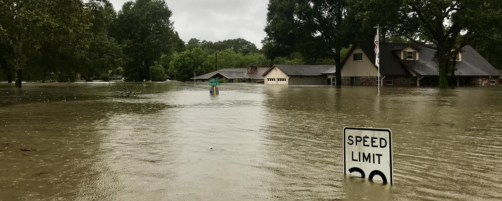
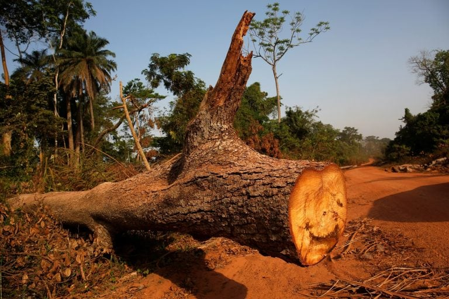

EVILS OF DEFORESTATION
What is Evils Of Deforestation ?
Deforestation refers to the decrease in forest areas across the world that are lost for other uses such as agricultural croplands, urbanization, or mining activities. Greatly accelerated by human activities since 1960, deforestation has been negatively affecting natural ecosystems, biodiversity, and the climate. The UN’s Food and Agriculture Organization estimates the annual rate of deforestation to be around 1.3 million km2 per decade.
It causes:- Drought,Flood,Lacking of Water,Lacking of Trees,Lacking of rain,Due to soil erosion landslide occurs and it makes the soil fertile.
Drought
A drought is caused by drier than normal conditions that can eventually lead to water supply problems. Really hot temperatures can make a drought worse by causing moisture to evaporate from the soil. Just because a region is hot and dry doesn't necessarily mean it is going through a drought. Droughts only occur when an area is abnormally dry.
Flood

Floods are the most frequent type of natural disaster and occur when an overflow of water submerges land that is usually dry. Floods are often caused by heavy rainfall, rapid snowmelt or a storm surge from a tropical cyclone or tsunami in coastal areas.
Lacking of Trees

Trees take in carbon dioxide and release oxygen and water vapor in the air, and that is why tropical rainforests are extremely humid. Trees also provide shade that keeps the soil moist. All these are compromised with the lack of trees.
Lacking of Rain
Shortage of water causes due to some water bodies are dried up and the temperature is increasing.